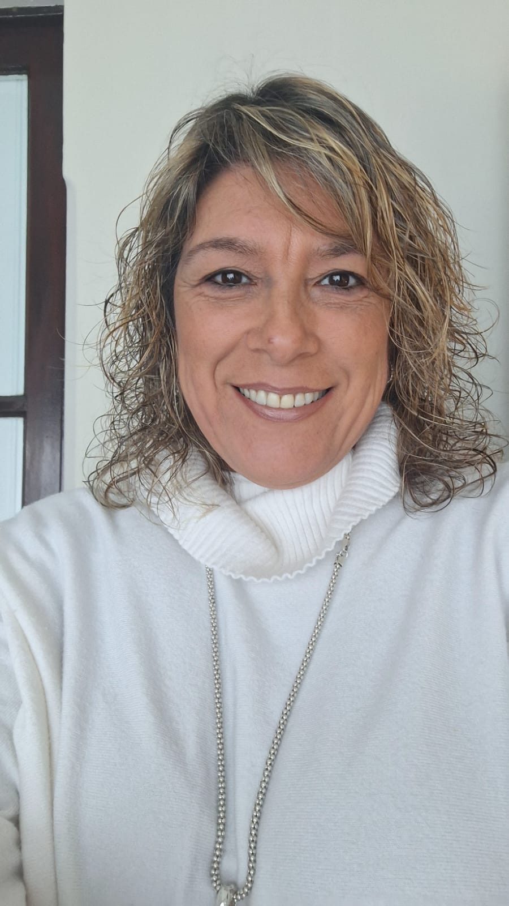
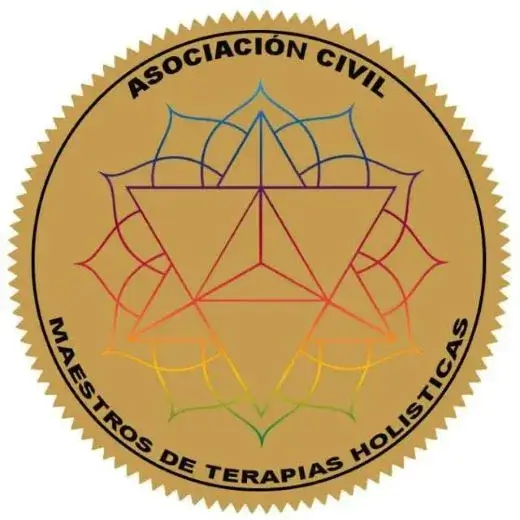
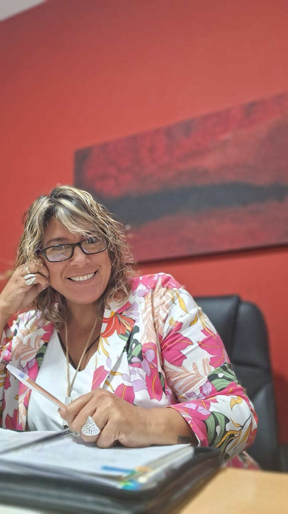
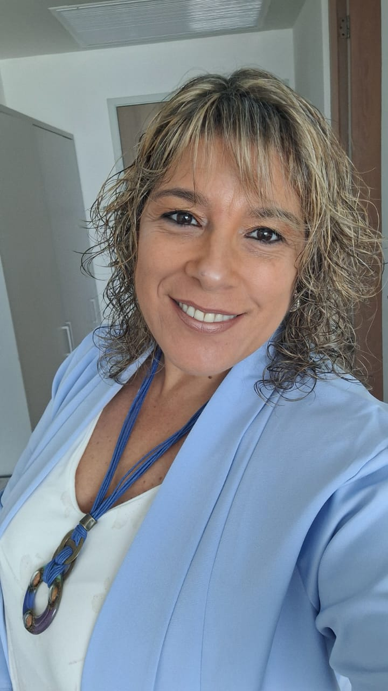

01
Decodificación
Biológica
El cuerpo es un templo del alma; guarda mensajes que aún no sabemos leer. Escuchémoslo juntos.
Leer más →Un espacio terapéutico para volver a vos. Cuerpo, mente, emoción y energía en una sola conversación honesta.


Matriculación avaladaACMTA · 2023Te acompañamos desde una mirada integradora que une cuerpo, mente, emoción y energía. Sesiones individuales, talleres vivenciales y encuentros grupales pensados para habitarte con más conciencia, amor y presencia.
Asociación Civil Maestros de Terapias Holísticas — agosto 2023.
Abordajes holísticos que trabajan lo emocional, corporal y energético. Elegí tu camino.
El cuerpo es un templo del alma; guarda mensajes que aún no sabemos leer. Escuchémoslo juntos.
Leer más →Asumir lo que sucedió y reconocer qué nos nutre o nos debilita en nuestras raíces.
Leer más →Aceptar el presente tal cual es. La plenitud es estar en sintonía con lo grande, también el dolor.
Leer más →
Un encuentro para comprender, soltar y dar el próximo paso.
Agendar sesión →
Desde un enfoque profundo y amoroso, integro Decodificación Biológica, Constelaciones Familiares —también asistidas con caballos—, Psicogenealogía e Hipnoterapia Regresiva para liberar bloqueos y reconectar con tu esencia.
Sumo herramientas como los Registros Akáshicos, el Péndulo Hebreo y el Coaching con caballos para generar espacios de sanación, conciencia y equilibrio interior.
Quince años de oficio, formación continua y una manera muy propia de habitar el rol terapéutico: cálida, profesional, profunda.

Terapeuta holística · Fundadora de Escuela de Vida
Acompaño procesos de transformación emocional desde hace más de quince años, integrando Constelaciones Familiares, Terapia Transgeneracional, Decodificación Biológica, Tarot Terapéutico y Registros Akáshicos.
Mi forma de trabajar combina presencia, escucha y herramientas concretas: cada sesión es un espacio seguro donde podés mirar lo que duele, honrar tu historia y abrir camino hacia algo nuevo. Trabajo online y presencial, con consultantes de Argentina, España y resto del mundo.
Reservar una sesión →Un encuentro al aire libre para comprender, soltar y dar el próximo paso. Los caballos espejan lo que tu palabra no alcanza.
Agendar sesión →
 Destacado
DestacadoAprendé a escuchar los mensajes del cuerpo y a decodificar síntomas como información.
 Destacado
DestacadoUna herramienta visual para mapear vínculos, sistemas y memorias familiares.

"Quien no conoce su historia, tiende a repetirla". Honrá, liberá y trascendé tu árbol genealógico.
Cada evento es una oportunidad para profundizar en tu bienestar y abrirte a una experiencia significativa.
Encuentro presencial · Sábado de 14 a 19 hs · Sala Centro Salto
Taller online · Domingo de 10 a 13 hs · Vivo + grabación posterior
Encuentro al aire libre · Sábado de 9 a 13 hs · Cupo limitado a 8 personas
Las experiencias de la infancia dejan huellas. Algunas nos llenan de amor; otras generan heridas que aún hoy influyen en nuestra vida adulta. Este ejercicio te guía en un proceso de reconexión con tu niña interior.
Descargar el ejercicio →